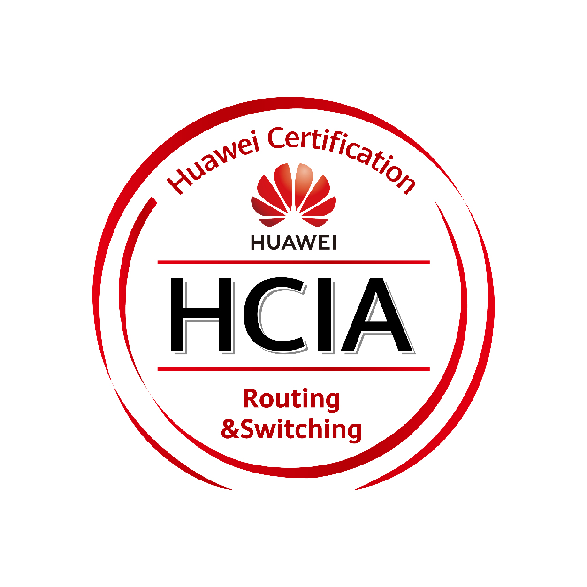
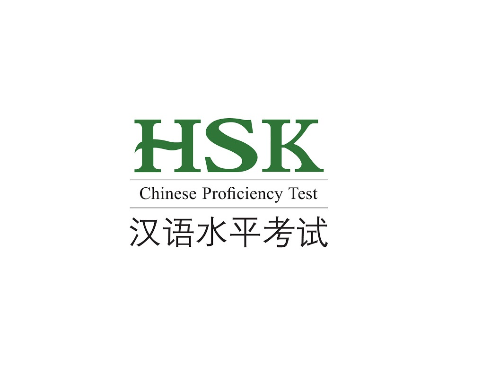
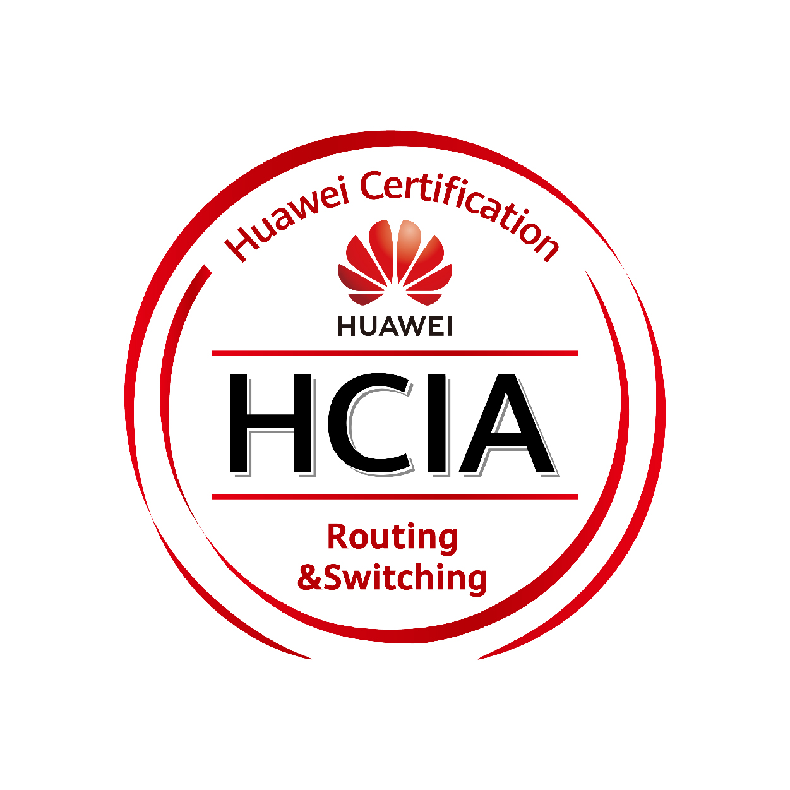
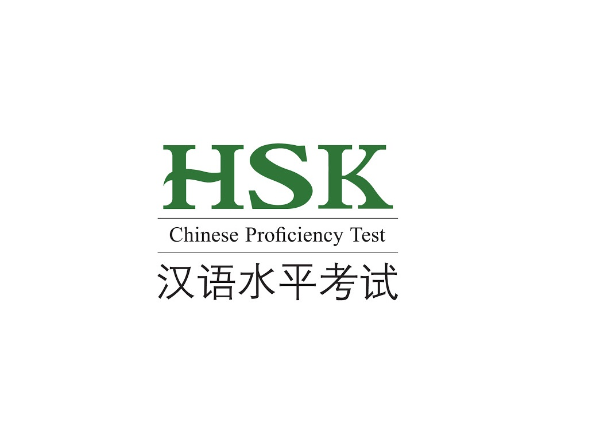

Abdulhamid M. Mousa
Network Engineer, AWS Cloud Practitioner, Web developer, ML Engineer, Pythonisa
About me
A Competent Network Engineer with a proven record of achievements in addition to wide array of skills ranging from in-depth knowledge of routing and switching technologies for the network design, implementation and administration. Capable of automating multi-vendor corporate and production networks.
Recognized for commitment to continuous learning of new technologies. Dependable and organized team player with the ability to communicate effectively and efficiently. Certified to work with Cisco systems at the professional level, Effective communicator who works closely with colleagues to understand and implement network needs.

  
 
Quick Overview
Professional Skills
Work Experience
• Configuration, Maintenance, and Backup of Cisco/Huawei Router and Switch devices.
• Knowledge of HTTP / S, FTP, SMTP, Pop3, Radius, Tacacs, Telnet, TFTP, DNS, SSH.
• Use of Wireshark Network Analyzer for troubleshooting.
• Designing involved using a variety of software such as SolidWorks, COMSOL, and ANSYS.
• CDP, LLDP, ARP protocols, Static IPV4 and IPV6 routes.
• Distance-Vector and Link-State internal routing protocols (RIP v1-2 and RIPng, EIGRP IPV4-6, OSPFv2 and OSPFv3, SingleArea/MultiArea and Summarization).
• Access Control List (ACL) IPV4 and IPV6 standard, extended, numbered, and named.
• Protocols for addressing and forwarding IP traffic such as DHCP (v6), PPPoE, Frame-Relay.
• STP, RSTP, PVST+ and Rapid PVST +, Etherchannel (LAG), Port-Security, DHCP Snooping, Dynamic Arp Inspection, VLAN, VTP, DTP.
• Tunneling protocols such as GRE, DMVPN, as well as encapsulation protocols such as PPP and HDLC protocols.
• Handle tasks of identifying, diagnosing, and resolving hardware and software problems.
• Managing and troubleshooting Servers ( Windows / Linux ).
• Research Direction: Bearing Fault Diagnosis using Convolutional Neural Networks (CNN) and Vibration Spectrogram.
• Reproduced Published Paper for: Hierarchical diagnosis of bearing faults using branch convolutional neural network considering noise interference and variable working conditions.
• Reproduced Published Paper for: Bearing Fault Diagnosis using Convolutional Neural Networks and Vibration Spectrogram.
• Focusing Research on the applications of Biomedical Devices & Biopsy Capsule Robots.
• Workload was divided between designing and testing to determine the Safety Measurement/s of the biopsy capsule, whilst performing Minimally Invasive Surgical Procedures.
• To tackle some of the problems in the designing part on the research, we had to use 3D printing technology not only to design an initial prototype of the biopsy capsule but also to emphasize restricted measurements to human body capabilities.
• Designing involved using a variety of software such as SolidWorks, COMSOL, and ANSYS.
• Applied variety of working principles in biopsy capsule, which involved Magnet Manipulations in helical microrobots that can be effectively propelled via a controlled rotating magnetic field, implementing Smart Materials to perform repetition motion
• Familiarized myself Perpetual motion applications
Thesis Project and Published Paper: A Capsule-Type Device for Soft Tissue Cutting Using a Threadless-Ball-screw Actuator
DOI: 10.1109/MARSS 2019.8860958.
Conference: 2019 International Conference on Manipulation, Automation, and Robotics at middle Scales (MARSS)
Project: National Key R&D Program of China (No. 2019YFB1309700).
Lab: Micro Bio RoboticsBeihang University (BUAA).
• Trained neural net pilot to drive the car on different tracks.
• Built prototype components using a 3D Printer.
• Assembled AI Donkey Car from the scratch.
• Participated in training ordinary people to learn the origin of data on road and on the sidewalk.
• Demonstrated the driver-less car components and how to train the driver-less car using a Deep Neural Network with help of other Technicians.
• Gained experience in Dealing with "IoT Embedded Systems Robotics" such as ARDUINO, RASPBERRY PI, PIC Microcontroller based projects with the interface of various types of sensors.
• Utilized Softwares such as Python and C Programming Language.
• Taught the working principle of Unmanned Driving Technology.
Education
Master's degree, Mechanical Engineering.
Chinese Comprehensive Course, Chinese Language.
HSK4: 210
Bachelor of Engineering - BE, Mechanical Engineering
GPA: 2.812
Thesis Project: Designed A Noval Biopsy Capsule Endoscope for Wireless Intestinal Tissue
Accomplishments
• English • Chinese • Arabic
• Chinese Government Scholarship - CSC Scholarship Sep 2021
Chinese Government Scholarship
• Third Prize Outstanding Behavior Foreign Students Award Dec 2017
honor issuerBeihang University (BUAA)
• Self-Supported Foreign Students Scholarship 2016 Dec 2016
honor issuerBeihang University (BUAA)
• Cisco Certified Network Associate (CCNA) 200-301 (Dec 2021> [PASS]
Section Analysis:
Network Fundamentals: 90%
Network Access: 95%
IP Connectivity: 88%
IP Services: 80%
Security Fundamentals: 80%
Automation and Programmability: 75%
• PCAP-31-03 Certified Associate in Python Programming
(Sep 2021) 85% out of 100%
The Certificate is obtained from |> PYTHON INSTITUTE - Open Education & Development Group <|
• HSK 4 "Chinese Proficiency Test" (Confucius Institute Headquarters) (Jun 2020)
[HSK4: 210]